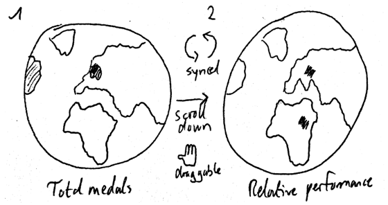
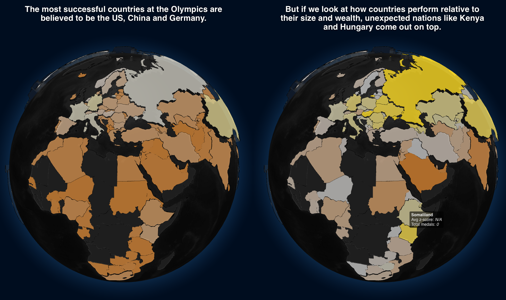
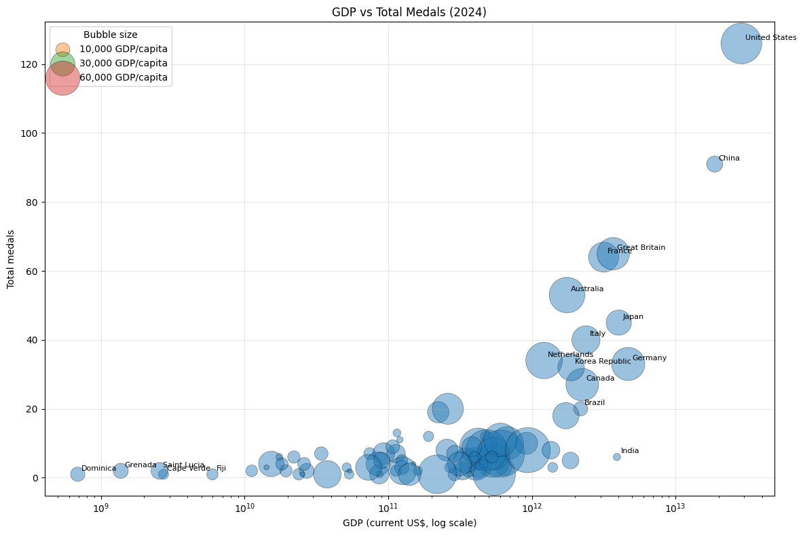
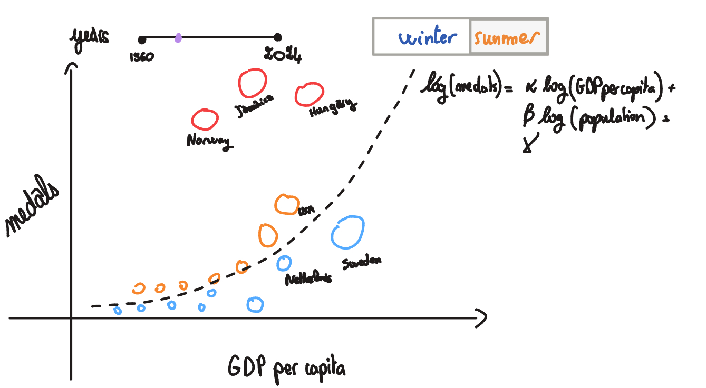
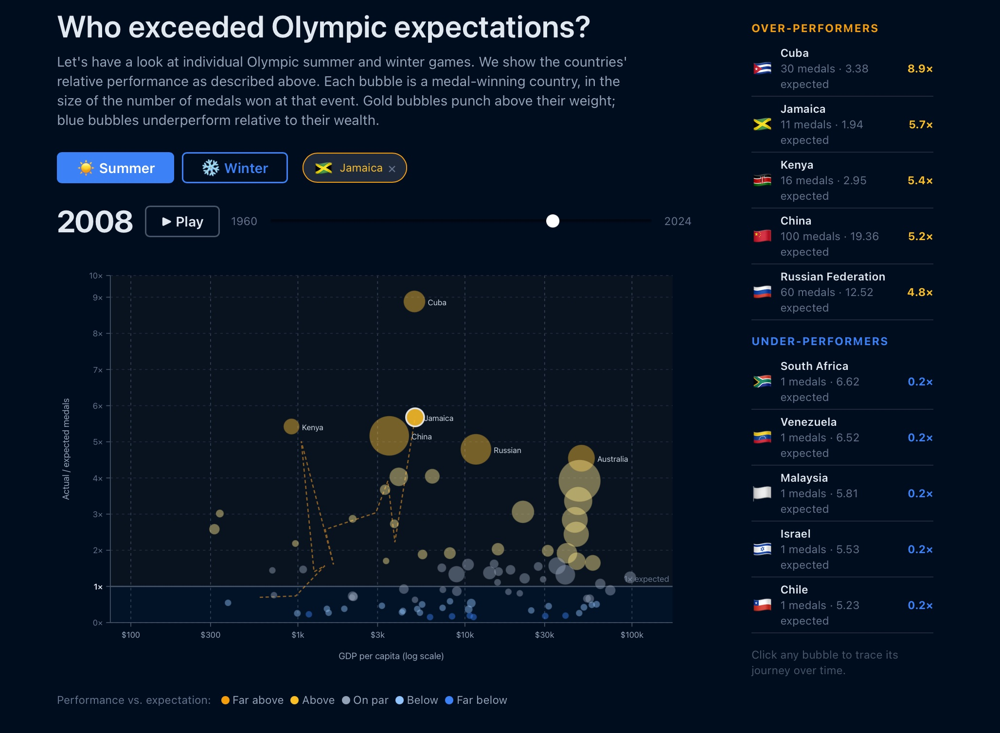
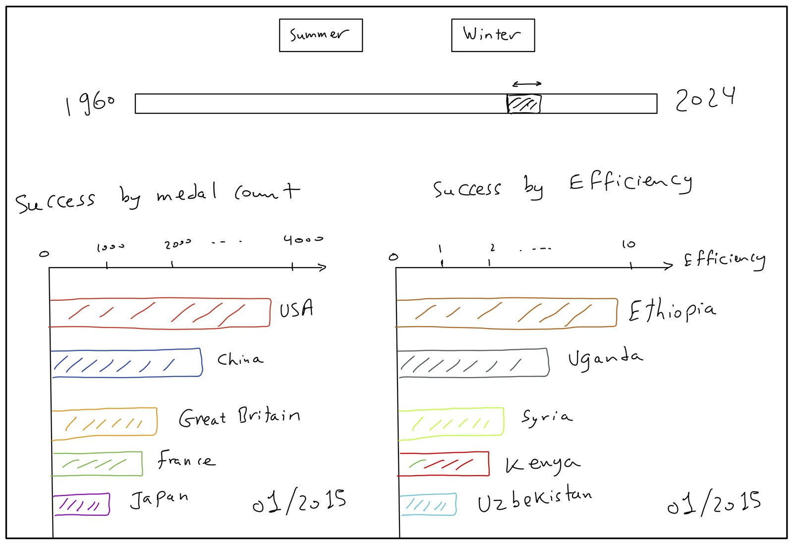

We began the data visualization project by looking for a dataset that would not only support interesting visualizations, but also let us tell a data-driven story that is insightful for a broad audience. We were drawn to the Olympic Games that happened in 2026, and to a question the usual medal table never really answers: when a country wins many medals, how much of that is merit, and how much is simply having a large population and economy to draw on? We combined an Olympic medals dataset (1896–2024, from Kaggle) with World Bank GDP and GDP-per-capita data, restricting the analysis to 1960 onward where both sources are available.
When preparing the first milestone, we found that prior work — academic studies and earlier course projects alike — tends either to confirm a positive relationship between wealth and Olympic success with very few visualizations, or to celebrate countries purely on absolute medal counts. We wanted a more critical stance on this meritocratic narrative. Rather than just praising whoever wins the most, we set out to praise the overachievers and understand the underachievers: countries that win far more — or far fewer — medals than their size and wealth would predict.
A key decision in our exploratory phase was to frame success in terms of relative performance rather than raw totals. After our exploratory analysis revealed how strongly medal counts track economic size, we decided to model the medals a country is expected to win from its population and GDP per capita, then measure how far each country sits above or below that expectation. This gave our visualizations a clear storyline and made them relevant for our target audience of sports enthusiasts, economists, and anyone curious about fairness in the Games. We present the data story alongside the visualizations on the website, guiding visitors with short insights as they explore.
The two data sources do not align out of the box. The Olympic data uses IOC country codes, while the World Bank data uses World Bank / ISO3 codes, so we built a mapping table (utils.code_fix) to reconcile them — including historical cases such as East and West Germany, the USSR and Czechoslovakia, which we map onto their modern successor states. We aggregated the medal data to the country–year–season level and merged it with GDP by code and year.
Because the World Bank series do not report population directly, we derived it as total GDP divided by GDP per capita, giving the three quantities our model needs: medals, population and GDP per capita. We dropped rows with missing or non-positive population, and pre-computed all per-event regression fits in Python so the website loads only small, ready-to-render files — a compact JSON for the scatter plot and per-season efficiency CSVs — rather than computing anything heavy in the browser.
Based on our story and on the features surfaced by our exploratory analysis, we designed four visualizations. They form a single scrolling narrative on the website, moving from the familiar total medal count toward our resource-adjusted view of success.
Two synchronized 3-D globes side by side. The first colours countries by total Olympic medal count; on scroll, a second globe slides in colouring them by relative performance instead. Both can be dragged to rotate, and hovering a country reveals its values.
to confront the traditional medal-count worldview with our resource-adjusted one, and let the viewer immediately see how the picture of “successful” countries changes. It intentionally leaves the computation of "relative performance" open to create some tension and curiosity on the side of the reader.
An explanatory section with an animated 3-D regression plane showing how expected medals are fit from population and GDP per capita, making the model behind the rest of the story transparent before we going into depth analysis.
to explain, visually and honestly, exactly how we compute “expected” medals so the over- and under-performance results that follow are interpretable and trustworthy.
An interactive bubble chart with GDP per capita on a log x-axis and the actual-to-expected medal ratio on the y-axis. Bubble size encodes medals won, colour encodes the z-score of over- or under-performance, a season toggle switches Summer/Winter, and a year slider with a play button animates through Olympic history. Clicking a bubble pins a country and traces its trajectory, while a side leaderboard lists the top over- and under-performers.
to let users explore, per Games, which countries punch above their economic weight and which fall short, and to follow individual countries as they drift relative to expectation across the decades.
Two synchronized racing bar charts. The left race ranks countries by cumulative total medals over rolling windows; the right ranks the same timeline by efficiency. Both advance in lockstep, and a season toggle switches between Summer and Winter Games.
to contrast the two ways of telling the story over time — who simply wins the most versus who performs best for their resources — and reveal how that ranking shifts across Olympic history.
After settling on the visualizations, we built the website as a single-page scrolling experience (tested on Chrome and Safari). For the second milestone, we had a first running version with the basic skeleton and first drafts of the charts, which we completed into the full interactive version for the third. We first sketched each visualization on paper and with a digital stylus during team meetings, then implemented them in the browser — the charts are hand-built directly with SVG inside React components, complemented by a few specialised libraries.
The whole site is a React single-page app in TypeScript for type safety and reusable, maintainable components.
A fast modern build tool for development and bundling, giving instant live reload while iterating on the charts.
The two globes are rendered in WebGL via react-globe.gl (Three.js under the hood), while the scatter plot and methodology charts are drawn directly as SVG with custom scales and log axes.
racing-bars (the bar chart race), framer-motion (layout animation) and papaparse (in-browser CSV parsing).
Milestone-1 analysis and all pre-processing: code reconciliation, merging, deriving population, and fitting the per-event regressions exported to the site.
We host the site on GitHub Pages — permanently online with no server to maintain. Deployment is a single npm run deploy that builds and pushes to the gh-pages branch.
To follow good practice and reduce duplication, we shared logic across the visualizations. The same season toggle and animated year/window controls — with a play button that steps through time automatically — appear in both the scatter plot and the bar chart race, and a single IOC-to-flag mapping drives the country flags throughout. The regression model is computed once in Python and consumed identically by every chart, so the whole site tells one internally consistent story.
The globe is the entry point of the website: it takes the most familiar metric in Olympic reporting — medal counts by country — and immediately questions it. The first globe colours countries on a bronze-to-gold scale by total medals, with each country’s height scaled to its haul, so the usual suspects (the United States, China, Germany) dominate. As the user scrolls, the view splits: the medal globe slides left and a second globe slides in, coloured by relative performance (average z-score across all Olympic Games). On that second globe very different countries light up — Kenya and Hungary among them — setting up the central tension of the project. The two globes are camera-synchronized, so the viewer always compares the same hemisphere under both definitions of success; we used the react-globe.gl WebGL library for performant rendering.


Because the rest of the story depends on the idea of “expected” medals, we make the model transparent. We fit a log-linear regression separately for each Olympic event and season:
Fitting per event controls for differences in population and wealth at that point in time, so the residual measures genuine over- or under-performance rather than era effects. Including population as well as GDP per capita matters: a large, rich country like the United States gets a high baseline expectation and a z-score near zero, while small countries that consistently exceed their predicted medals — Jamaica, Kenya, Cuba — emerge as the real outliers. We express over-performance multiplicatively, as log(actual / predicted) ÷ residual standard deviation. On the website this is conveyed through an animated 3-D regression plane that sweeps in to show the expected surface.
This is the analytical heart of the project and the visualization that evolved most between milestones. Our milestone-1 exploration started from a simple bubble chart of GDP versus total medals, which already hinted that wealth and medals move together — but imperfectly.


By milestone 3 it had become a fully interactive Gapminder-style chart. Each bubble is a medal-winning country at a given Games. The x-axis is GDP per capita on a log scale; the y-axis is the actual-to-expected medal ratio, with a clear baseline at “1× expected”. Bubble size encodes medals won, colour encodes the z-score on a diverging scale — gold for far above expectation, blue for far below. A season toggle switches the dataset, a year slider with a play button animates through every edition, and clicking a bubble pins that country, drawing a dashed trajectory through previous Games. A side leaderboard lists the top over- and under-performers.

The final visualization brings time to the foreground by racing two leaderboards side by side. The left race ranks countries by cumulative total medals across rolling windows; the right race ranks the same timeline by efficiency. Seeing both at once makes the thesis concrete: the country topping the medal race is rarely the one topping the efficiency race.

The two races are driven from a single ticker so they stay in lockstep — play, pause and seek on the right propagate to the left. We built them with the racing-bars library fed by our per-season efficiency CSVs. One subtlety handled in pre-processing was de-duplicating countries within each window: historical split nations such as East and West Germany, or the USSR and Russia, map onto a single modern code, so we keep the best-performing row per country per Olympic year. Combined with the scatter, the two views let a reader move fluidly between a single Games and the whole arc of Olympic history, always under the same resource-adjusted definition of success.
Our team had solid web-development experience, so the difficulties we hit were mostly specific to reconciling two very different datasets and making honest comparisons across countries and eras.
Reconciling country codes across sources and history. The two datasets use different coding schemes, and history complicates matters: dissolved or split nations (USSR, East/West Germany, Czechoslovakia, Yugoslavia) have no single modern GDP series. We built an explicit mapping onto successor states and merge rows when several historical teams share one modern code, so a country is never double-counted.
Defining a fair success metric. Raw medal counts overwhelmingly track economic size, so ranking on totals just rewards big, rich countries. The expected-medals model — fitting per event, in log space, including population alongside GDP per capita — is what lets small over-performers surface as genuine outliers.
Deriving population from the available data. The World Bank extracts had no population field, yet the model needs it. We obtained it by dividing total GDP by GDP per capita, then filtered out non-positive or missing values that were data artefacts.
Usability of the website. Interactions with complex elements such as the globes were not trivial, so we added hints like "Drag to explore" to make the available gestures discoverable. We also wanted to ensure a good visual experience, which is why we enforced a roughly 16:9 screen ratio so the layout and proportions stay as intended.
All members took part in most of the project, with the majority of design and implementation decisions made together in meetings. Beyond that shared work, each focused on particular areas, reflected in the commit history.
Implemented the racing bar charts and the efficiency calculation. Carried out much of the EDA and dataset preparation (medals–GDP merge, GDP-rank-by-year), and fixed the duplicate-country and layout bugs.
Set up the website scaffold and GitHub Pages pipeline (Vite, React, TS). Main author of the page structure, the dual-globe visualization and the global styling. Drove the sport-level analysis and maintained the M1 report and README.
Originated the efficiency / expected-medals framing and the bubble-chart design that became the relative-performance scatter, and built that component with its pre-computed data. Produced early total-medals-vs-GDP analysis and the M2 sketch, contributed to the README, and wrote this process book.